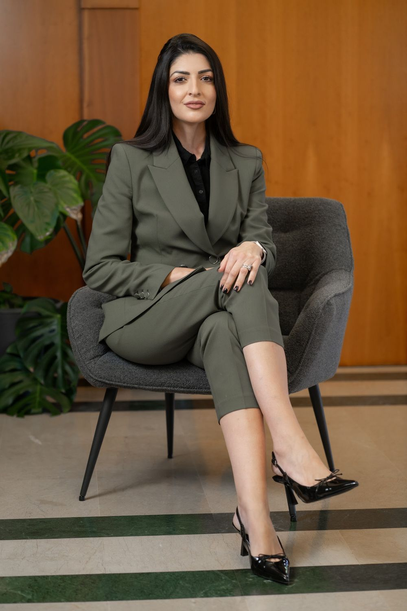

גלי טלGali Tal עורכת דיןAttorney at law
נזקי גוף, ביטוח לאומי, תאונות דרכים, משרד הביטחון ומיצוי זכויות. משרד עורכי הדין של גלי טל קוקיאשוילי, בקריית מוצקין.Personal injury, National Insurance, road accidents, Ministry of Defence claims and rights. The law office of Gali Tal Kokiashvili, in Kiryat Motzkin.
5.0בגוגל · 25 ביקורותon Google · 25 reviews
מי שיושבת מולכםWho sits across from you
גלי טל קוקיאשוילי מקבלת אתכם במשרד שלה ברחוב שושנה דמארי.Gali Tal Kokiashvili sees you at her office on Shoshana Damari Street.
״גלי הסבירה לי כל דבר בתהליך ולא השאירה אותי באוויר.״“Gali explained everything in the process to me and didn’t leave me hanging.”
חמישה תחומיםFive fields
בחרו כרך מהמדף.Pick a volume from the shelf.
כותבים לגליWrite to Gali
סמנו מה רלוונטי, וההודעה תיכתב לבד.Tick what applies and the message writes itself.
- הנושאThe subject
- בשביל מיFor whom
- שליחהSend
אל: גלי טל, עו״ד · וואטסאפTo: Gali Tal, Attorney · WhatsApp
שליחה לגלי בוואטסאפSend to Gali on WhatsAppביקורות בגוגל Google reviews
מה כותבים עליהWhat people write
רוצה להמליץ מכל הלב על עורכת דין גלי טל, ליוותה אותי בתקופה מאוד מורכבת ונתנה לי יחס אנושי, סבלני ומכיל לאורך כל הדרך. מעבר למקצועיות ולידע שלה, הרגשתי שיש מולי אישה עם לב רחב, אכפתיות אמיתית ורצון לעזור מכל הנשמה. היא נתנה לי תחושת ביטחון ורוגע ברגעים מאוד מלחיצים, וזה משהו שלא מובן מאליו בכלל. מודה לה מאוד וממליצה עליה בחום לכל מי שצריך ליווי משפטי עם אנושיות ורגישות.
I want to recommend attorney Gali Tal with all my heart. She accompanied me through a very complicated period and gave me humane, patient and understanding treatment all the way. Beyond her professionalism and knowledge, I felt there was a woman in front of me with a big heart, real care and a wish to help with her whole soul. She gave me a sense of security and calm in very stressful moments, and that is not something to take for granted at all. I thank her very much and warmly recommend her to anyone who needs legal support with humanity and sensitivity.
גלי עורכת דין מקצועית ואנושית. גלי הסבירה לי כל דבר בתהליך ולא השאירה אותי באוויר. גלי תודה על ליווי, חשיבה יצירתית וסבלנות
Gali is a professional and humane lawyer. Gali explained everything in the process to me and didn’t leave me hanging. Gali, thank you for the support, the creative thinking and the patience
שירות מצוין ומקצועיות ללא פשרות. גלי טיפלה בתיק הנזיקין שלי ביעילות, הייתה זמינה לכל שאלה והובילה לתוצאה מצוינת. בהחלט משרד שאפשר לסמוך עליו.
Excellent service and uncompromising professionalism. Gali handled my personal injury case efficiently, was available for every question and led to an excellent result. Definitely an office you can trust.
רוצה להמליץ מכל הלב על עורכת הדין גלי. יחס אישי וליווי כזה לא מצאתי בשום מקום אחר. בלי קשובה אכפתית ועמדה על כך שאקבל את כל הזכויות שלי. יש לה גישה מהממת וממש מרגישים כמה חשוב לה
I want to recommend attorney Gali with all my heart. Personal attention and support like this I haven’t found anywhere else. Attentive, caring, and she insisted that I receive all my rights. She has a wonderful approach and you really feel how much it matters to her
אני רוצה להמליץ מכל הלב על עורכת הדין גלי טל. מקצועית, חדה, יסודית ולא מוותרת לרגע. מול כל הקשיים והבירוקרטיה שביטוח לאומי הערימו בדרך במשך 4 שנים נסיונות שלנו ללא ייצוג שנכשלו מול המוסד. הגעתמ לגלי שנלחמה עבור הבן שלי במסירות, באמונה ובנחישות, והצליחה להשיג לו את הנכות שמגיעה לו בזכות ולא בחסד. מעבר למקצועיות, היא אנושית, רגישה ומלווה יד ביד ברגעים לא פשוטים. ממליצה עליה בלב שלם לכל הורה שצריך ליווי אמיתי ומקצועי מול ביטוח לאומי. עלי והצליחי!
I want to recommend attorney Gali Tal with all my heart. Professional, sharp, thorough and never gives up for a moment. Against all the difficulties and bureaucracy National Insurance piled up along the way, four years of our own attempts without representation failed. We came to Gali, who fought for my son with dedication, faith and determination, and got him the disability rating he is entitled to, by right and not as a favour. Beyond the professionalism, she is humane, sensitive and walks with you hand in hand through hard moments. I wholeheartedly recommend her to any parent who needs real, professional support with National Insurance. Keep rising and succeeding!
שאלות קצרותShort questions
באילו תחומים גלי עוסקת?What does Gali work on?
נזקי גוף, ביטוח לאומי, תאונות דרכים, תביעות מול משרד הביטחון ומיצוי זכויות.Personal injury, National Insurance, road accidents, claims with the Ministry of Defence, and realising your rights.
איפה המשרד?Where is the office?
ברחוב שושנה דמארי 4, קריית מוצקין. המפה נמצאת למטה.At 4 Shoshana Damari Street, Kiryat Motzkin. The map is just below.
מתי המשרד פתוח?When is the office open?
לפי הרישום בגוגל: ראשון עד חמישי, 24 שעות. שישי ושבת סגור.According to the Google listing: Sunday to Thursday, 24 hours. Closed Friday and Saturday.
אפשר להתחיל בהודעה?Can I start with a message?
כן. אפשר לכתוב לגלי בוואטסאפ, או למלא את הטופס שלמעלה.Yes. You can write to Gali on WhatsApp, or fill in the form above.
שושנה דמארי 44 Shoshana Damari
קריית מוצקיןKiryat Motzkin